Одна клиника. Люди разных возрастов, профессий и национальностей. Разные направления медицины — и одна забота: о вашем здоровье.
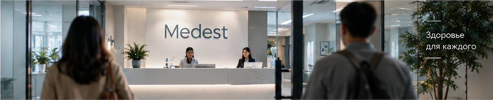
Что мы снимаем, про кого и в каком настроении. Без киношных терминов.
Medest — широкопрофильный медицинский центр, который заботится о здоровье людей разных возрастов и направлений: от новорождённых детей до людей преклонного возраста, а также пациентов на реабилитации.
Показать, что Medest — это центр для людей любого возраста и с разными потребностями в заботе о здоровье. Одна большая клиника, где каждый получает нужную ему помощь.
30–40 секунд. Добрый, располагающий закадровый голос на протяжении всего ролика и субтитры в нижней части кадра.
Гости медицинского центра — люди разных возрастов, национальностей и образа жизни.
Врачи — в сдержанной, удобной медицинской форме, преимущественно азиатской и славянской внешности. Пациенты — в повседневной одежде, без привязки к сезону или погоде.
Все сцены — внутри медицинского центра: в разных кабинетах, залах и функциональных пространствах клиники.
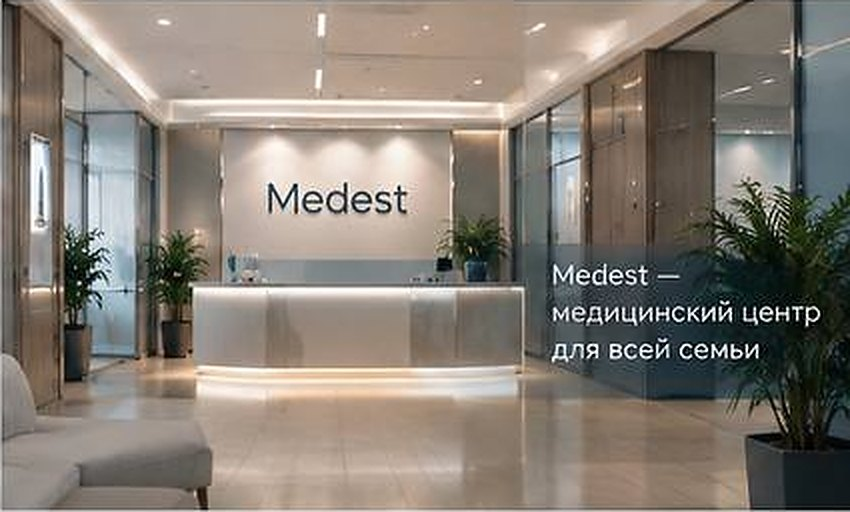
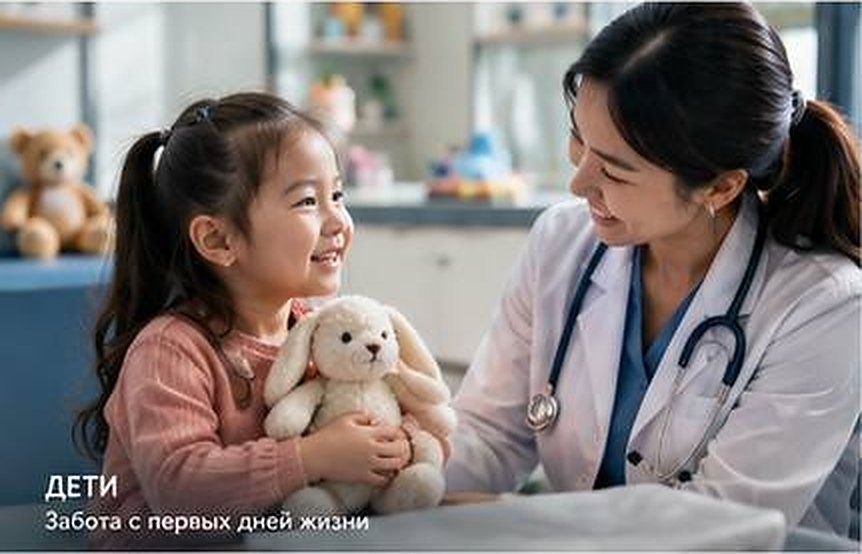
С игрушкой в руках. На заднем плане — детский врач, который тоже держит игрушку и общается с ребёнком.
Педиатрия
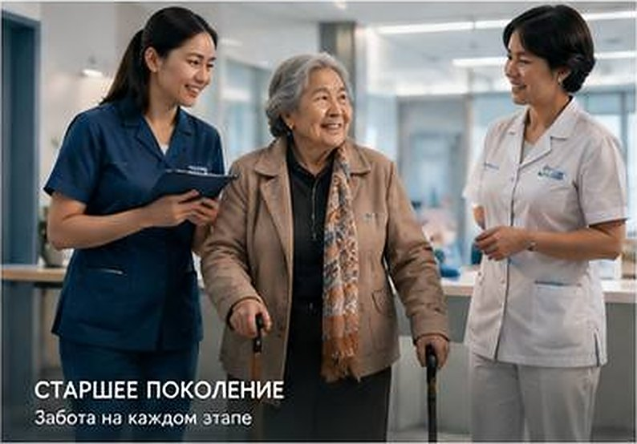
Пожилая женщина с тростью. На заднем плане — две сотрудницы: одна заполняет данные, вторая проводит обследование.
Терапия · гериатрия · диагностика
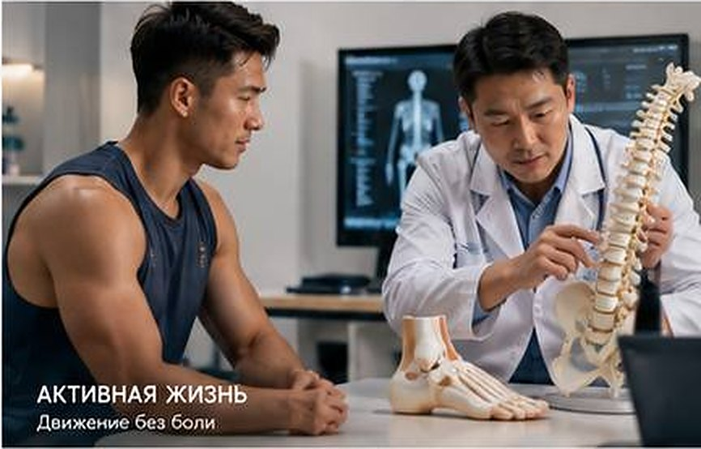
Мужчина спортивного телосложения. Врач показывает макет позвоночника и объясняет положение спины и стоп.
Ортопедия · спортивная медицина
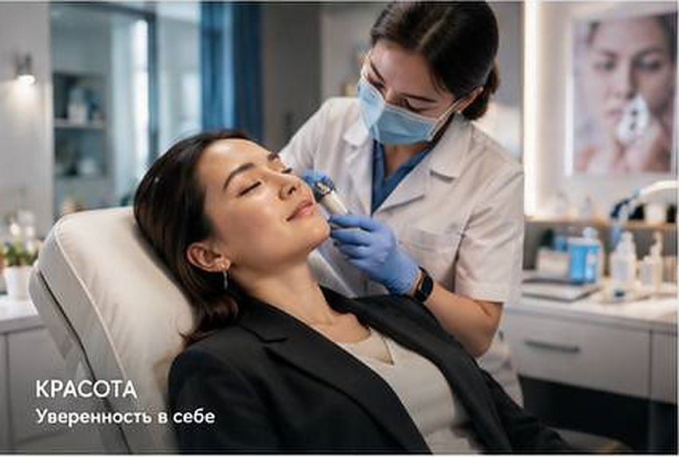
Женщина в деловом образе. На заднем плане специалист проводит косметологическую процедуру.
Косметология · эстетическая медицина
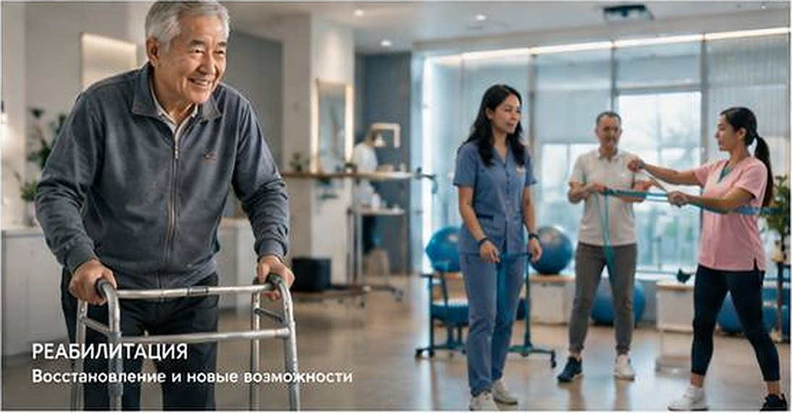
Пожилой мужчина с ходунками. На заднем плане — групповое занятие ЛФК или кинезиотерапии.
ЛФК · кинезиотерапия · реабилитация
Тёплая, уютная атмосфера, вызывающая доверие и ощущение заботы. Холодные оттенки — уместно, в интерьере и общей стилистике.
Добрый, располагающий саунд и такой же закадровый голос. Спокойно и вдохновляюще, без рекламного нажима.
В кадре — представители разных национальностей и рас: клиника открыта и доступна каждому. Врачи — преимущественно азиатской и славянской внешности.
Современная, светлая, чистая клиника. На стенах — названия направлений, они помогают зрителю понять, куда «переместился» кадр.
Кадры ролика по порядку. На каждый — изображение, что происходит, голос за кадром и субтитр в нижней части кадра.
Статичный кадр напротив стойки приёмной, средне-общий план. Герой — на переднем плане слева, спиной или в 3/4; действие — в глубине кадра.
Новый герой входит слева, его силуэт перекрывает кадр — и за ним уже другой кабинет. Склейка прячется в силуэте, ролик ощущается непрерывным.
Один тёплый голос ведёт весь ролик. Внизу кадра — короткий титр направления и строка субтитров. Ритм: около 5–6 секунд на героя.
Статичный кадр напротив стойки приёмной. Светлый холл, логотип Medest на стене, за стойкой работают администраторы. Передний план пока пуст.
«В Medest приходят очень разные люди».
MedestМедицинский центр
Штатив. Тихий гул холла, мягкое начало музыки.
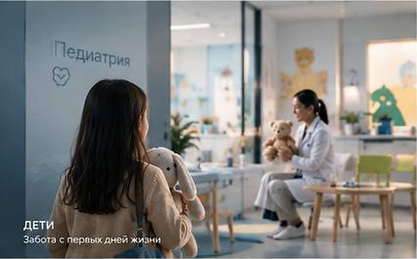
Что происходит в глубине кадра: детский врач держит такую же игрушку и разговаривает с ребёнком на его языке.
Слева в кадр входит маленькая девочка с игрушкой в руках. За ней приёмная превращается в детское отделение: яркие стены, игрушки, на стене — «Педиатрия». На заднем плане детский врач тоже держит игрушку и общается с ребёнком.
«Самые маленькие — к врачу, который умеет говорить на их языке».
ДетиЗабота с первых дней жизни
Камера неподвижна. Детский смех вдалеке.
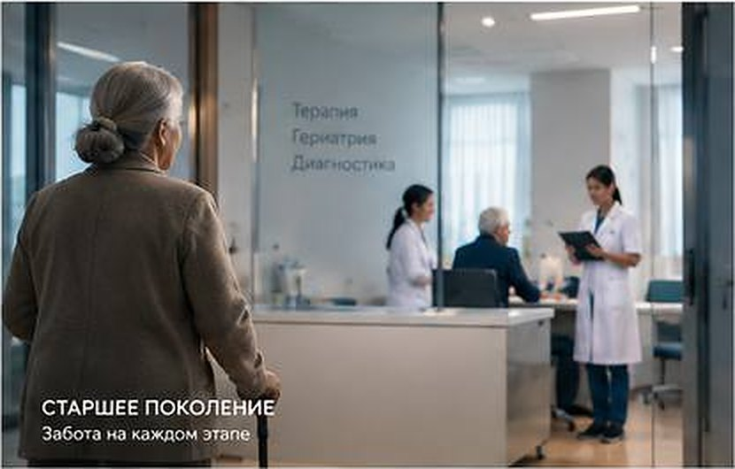
Что происходит в глубине кадра: одна сотрудница заполняет данные, вторая проводит обследование. Внимательно и без спешки.
Силуэт пожилой женщины с тростью проходит слева — и за ней уже кабинет терапии: на стене «Терапия · Гериатрия · Диагностика». Две сотрудницы клиники: одна заполняет необходимые данные, вторая проводит обследование пациента.
«Старшее поколение — за вниманием, терпением и точной диагностикой».
Старшее поколениеЗабота на каждом этапе
Камера неподвижна. Стук трости, негромкий разговор.
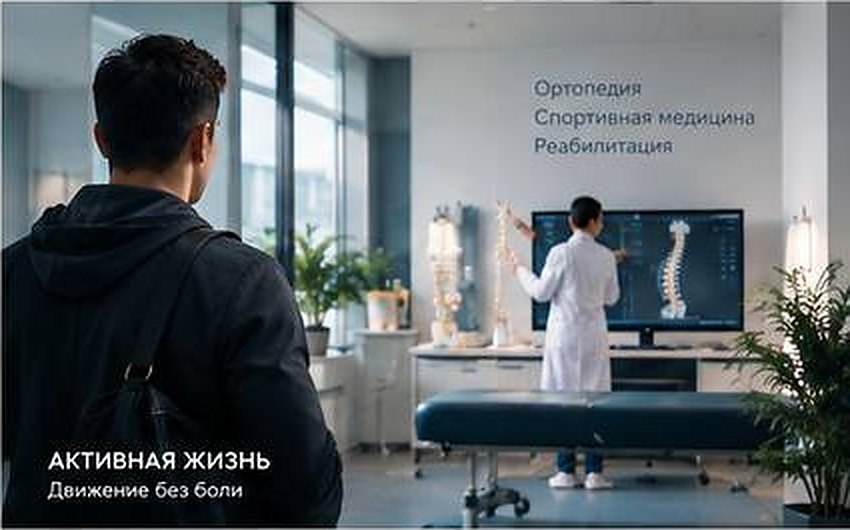
Что происходит в глубине кадра: врач на макете позвоночника и стопы объясняет, как они связаны и что делать.
Слева появляется мужчина спортивного телосложения. Пространство меняется на кабинет ортопеда: кушетка, экран со снимком, на стене «Ортопедия · Спортивная медицина · Реабилитация». Врач показывает макет позвоночника и объясняет особенности положения спины и стоп.
«Те, кто всегда в движении, — чтобы спина и стопы не подводили».
Активная жизньДвижение без боли
Камера неподвижна. Музыка чуть набирает темп.
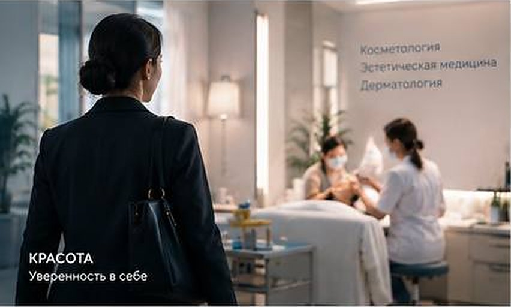
Что происходит в глубине кадра: специалист в маске и перчатках проводит косметологическую процедуру. Спокойно, аккуратно.
В кадр входит женщина в деловом образе, с сумкой на плече. За ней — кабинет косметологии: мягкий свет, на стене «Косметология · Эстетическая медицина · Дерматология». Специалист проводит косметологическую процедуру.
«Те, у кого расписан каждый час, — за временем для себя».
КрасотаУверенность в себе
Камера неподвижна. Музыка становится мягче.
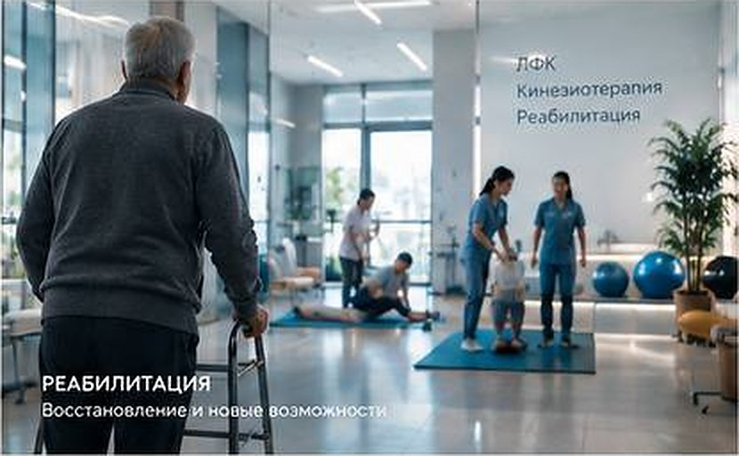
Что происходит в глубине кадра: групповое занятие — инструкторы помогают пациентам, эспандеры, мячи, коврики.
Слева медленно входит пожилой мужчина с ходунками. Пространство раскрывается в светлый зал реабилитации: на стене «ЛФК · Кинезиотерапия · Реабилитация», идёт групповое занятие с инструкторами.
«А кто-то — чтобы шаг за шагом вернуться к привычной жизни».
РеабилитацияВосстановление и новые возможности
Камера неподвижна. Счёт инструктора вдалеке, музыка поднимается к финалу.
Кадр возвращается к стойке приёмной. Теперь у стойки — люди, администраторы приветствуют их. Логотип Medest в центре. Появляются слоган и контакты.
«Разные люди, разные задачи — одна клиника. Medest. Медицинский центр для всей семьи».
Medest — медицинский центр для всей семьи[адрес] · [телефон] · [сайт]
Камера неподвижна. Музыка на пике, мягкое завершение.
| 0:00–0:04 | В Medest приходят очень разные люди. |
| 0:04–0:10 | Самые маленькие — к врачу, который умеет говорить на их языке. |
| 0:10–0:16 | Старшее поколение — за вниманием, терпением и точной диагностикой. |
| 0:16–0:22 | Те, кто всегда в движении, — чтобы спина и стопы не подводили. |
| 0:22–0:27 | Те, у кого расписан каждый час, — за временем для себя. |
| 0:27–0:32 | А кто-то — чтобы шаг за шагом вернуться к привычной жизни. |
| 0:32–0:38 | Разные люди, разные задачи — одна клиника. Medest. Медицинский центр для всей семьи. |
Два листа настроения, из которых собрана раскадровка. Нажмите на лист, чтобы открыть его целиком.
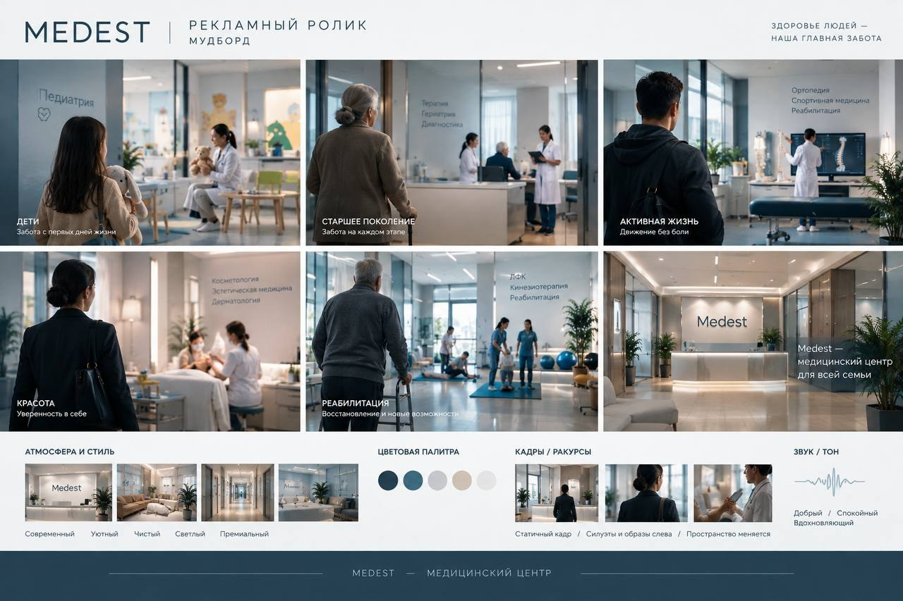
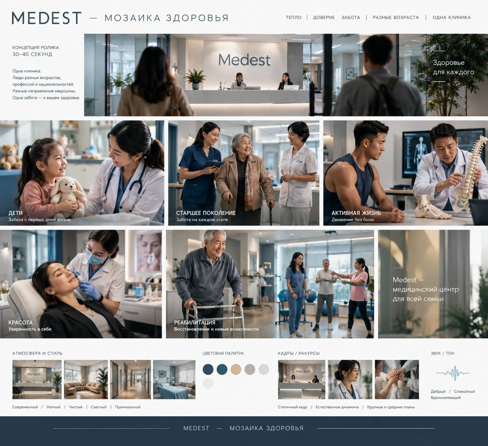
Статичный кадр. Силуэты и образы слева, пространство меняется за ними. Для деталей — крупные и средние планы с естественной динамикой.
Добрый, спокойный, вдохновляющий. Музыка не спорит с голосом, а поддерживает его.
Тепло · доверие · забота · разные возрасты · одна клиника. Здоровье людей — наша главная забота.